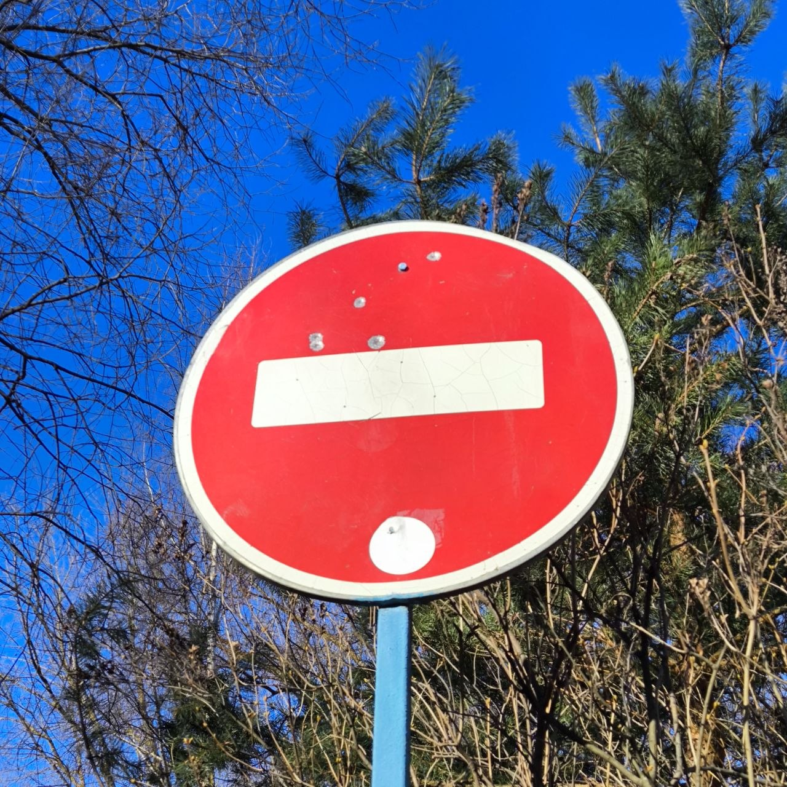
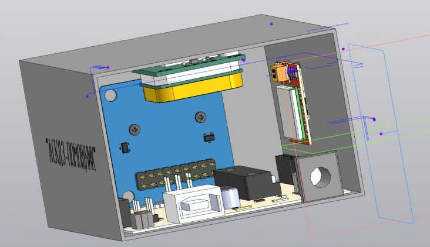
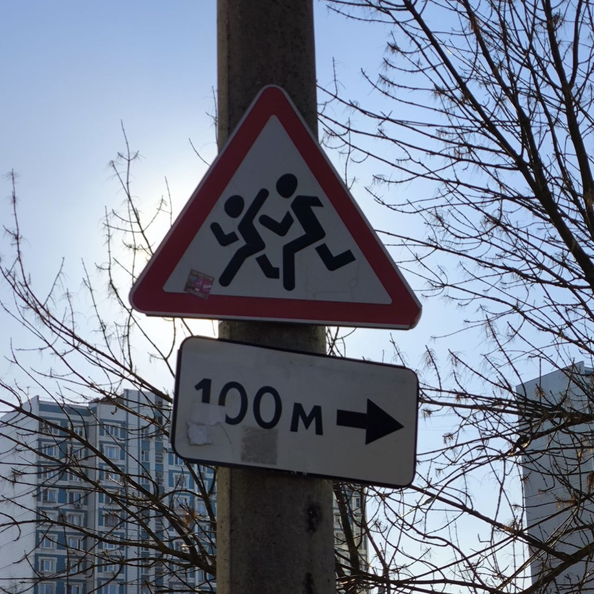
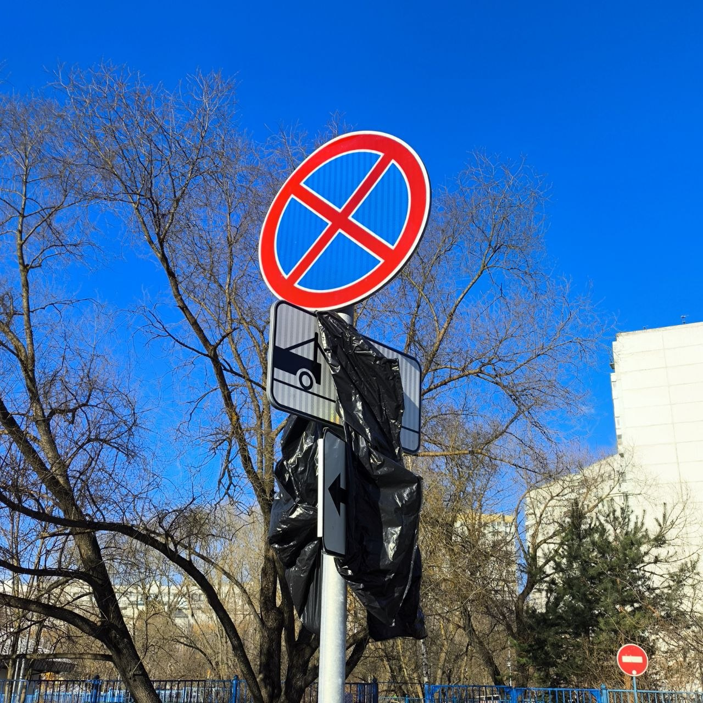
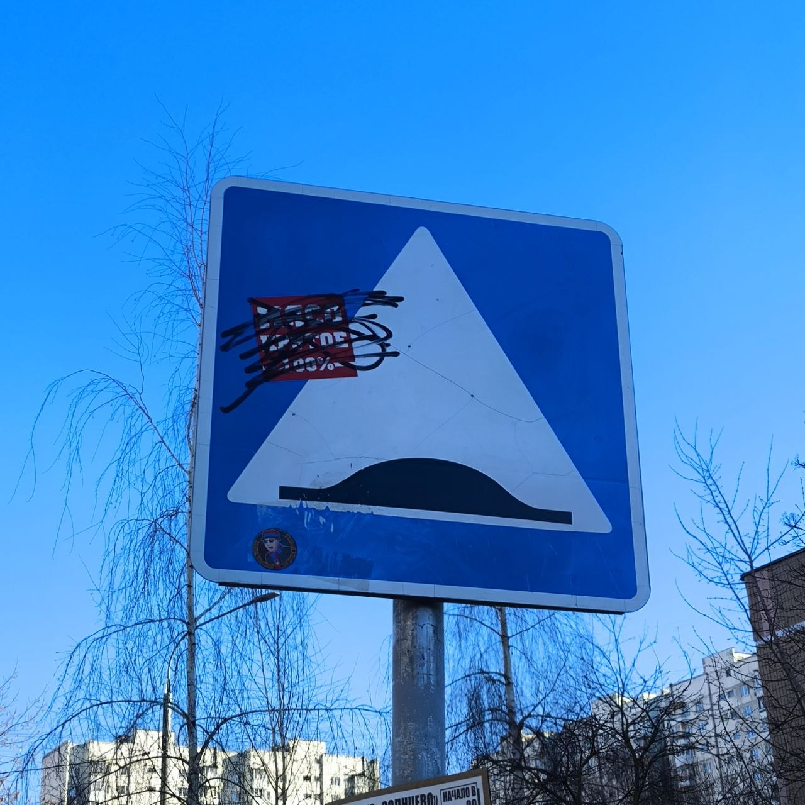
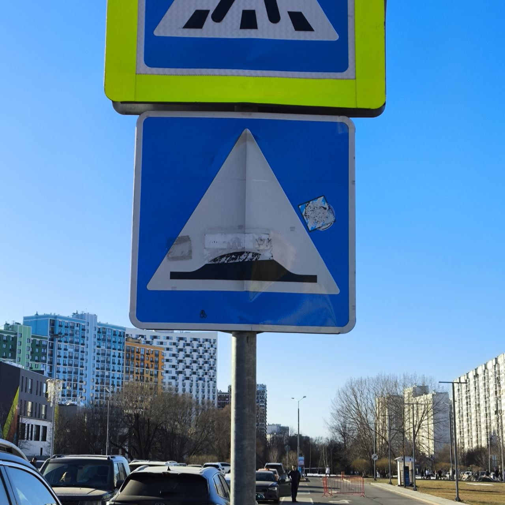
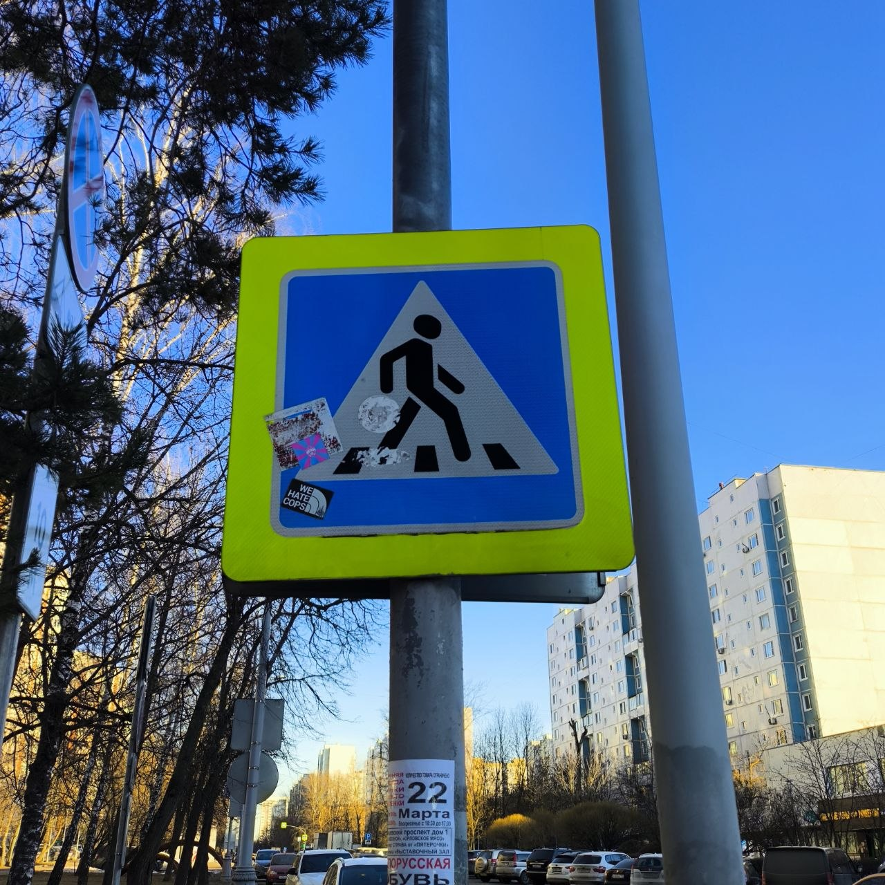

STOP
Объект: Выезд запрещен
Адрес: ул. Авиаторов, д.18, корп.1, 119620
Зафиксировано повреждение лицевой части
Интеллектуальная экосистема безопасности дорожного движения
Дорожные знаки — это «язык» дороги. Ошибки в их содержании стоят человеческих жизней.
Проект ATSMS направлен на решение критической проблемы: несвоевременного обнаружения повреждений и нарушений регламентов установки технических средств организации движения. В условиях мегаполиса ручной мониторинг тысяч объектов неэффективен и подвержен человеческому фактору.
Наше решение — это симбиоз высокоточных аппаратных датчиков и алгоритмов компьютерного зрения. Система в реальном времени анализирует состояние знаков на соответствие ГОСТ Р 52289-2019, мгновенно выявляя акты вандализма, износ световозвращающего покрытия или отклонения в геометрии установки.
Мы не просто фиксируем проблемы — мы создаем предиктивную модель обслуживания дорожной сети, снижая риски ДТП и оптимизируя работу городских служб.


Адрес: ул. Авиаторов, д.18, корп.1, 119620
Зафиксировано повреждение лицевой части

Адрес: ул. Шорса, д.8, корп.1
Зафиксировано присутствие посторонних объектов на знаке

Адрес: ул. Авиаторов, д.18, корп.1, 119620
Зафиксировано присутствие посторонних объектов на знаке

Адрес: ул. Шорса, д.6, корп. 1
Зафиксировано загрязнение знака

Адрес: ул. Авиаторов, д.3, корп. А
Зафиксировано загрязнение знака

Адрес: Солнцевский просп., д.8
Зафиксировано загрязнение знака